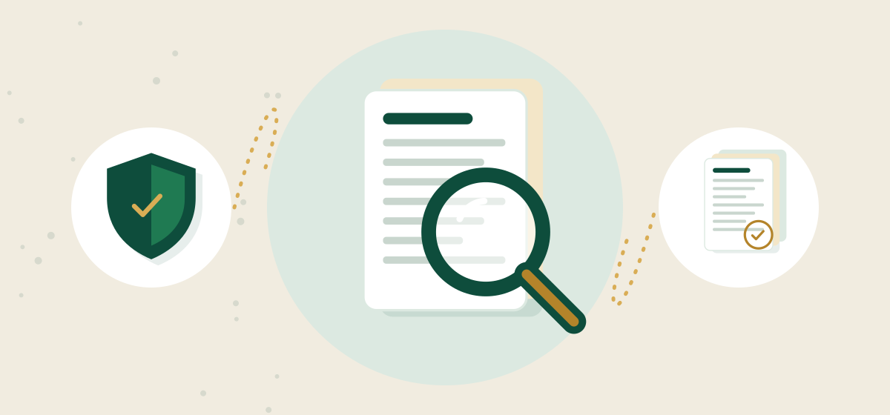

Kiểm tra quyết toán thuế: chuẩn bị gì để không bị truy thu

Nhận thông báo kiểm tra quyết toán thuế là lúc nhiều chủ doanh nghiệp mới mở lại sổ sách của vài năm trước. Nếu chuẩn bị muộn, khoản truy thu kèm tiền chậm nộp có thể lớn hơn dự kiến. Bài viết này hướng dẫn những việc cần làm trước buổi kiểm tra, dựa trên kinh nghiệm dịch vụ kế toán của ACCA Consulting Vietnam.
1. Kiểm tra quyết toán thuế là gì, khi nào xảy ra
Kiểm tra quyết toán thuế là việc cơ quan thuế xem xét lại số liệu doanh nghiệp đã kê khai cho một hoặc nhiều năm: doanh thu, chi phí, thuế GTGT, TNDN, TNCN. Việc kiểm tra có thể diễn ra tại trụ sở cơ quan thuế hoặc tại doanh nghiệp, theo kế hoạch hoặc khi có dấu hiệu rủi ro.
Một số tình huống thường dẫn đến kiểm tra: doanh nghiệp đề nghị hoàn thuế, giải thể, chuyển đổi hoặc chấm dứt mã số thuế, số liệu kê khai biến động bất thường, hoặc đơn vị đã nhiều năm chưa được kiểm tra. Trình tự, thủ tục cụ thể thực hiện theo quy định hiện hành, và Luật Quản lý thuế 2025 có hiệu lực từ 01/07/2026 nên cần cập nhật hướng dẫn mới nhất.
2. Những điểm cơ quan thuế thường soát kỹ
| Nhóm | Dấu hiệu rủi ro | Hệ quả có thể xảy ra |
|---|---|---|
| Thuế GTGT đầu vào | Hoá đơn từ 5 triệu đồng trở lên trả bằng tiền mặt | Không được khấu trừ thuế GTGT đầu vào |
| Chi phí TNDN | Chi phí thiếu hợp đồng, hoá đơn, chứng từ thanh toán | Bị loại khỏi chi phí được trừ, tăng thuế TNDN |
| Tiền lương | Bảng lương không khớp hợp đồng, BHXH, tờ khai TNCN | Truy thu TNCN, loại chi phí lương |
| Doanh thu | Hoá đơn đầu ra lệch sổ sách, sao kê ngân hàng | Ấn định thêm doanh thu |
| Tạm nộp TNDN | Tổng 4 quý tạm nộp thấp hơn 80% số quyết toán | Phát sinh tiền chậm nộp theo quy định hiện hành |
| Lưu trữ | Thiếu chứng từ gốc của các năm trước | Không chứng minh được chi phí |
Điểm chung của các lỗi trên là thiếu đối chiếu. Hoá đơn, sổ sách, sao kê ngân hàng, bảng lương và tờ khai mỗi thứ một số. Khi cơ quan thuế ghép các nguồn này lại, mọi chênh lệch đều phải giải trình.

3. Hồ sơ cần chuẩn bị trước buổi kiểm tra
- Tờ khai GTGT, TNCN và quyết toán TNDN, TNCN của các năm được kiểm tra
- Báo cáo tài chính năm và sổ kế toán chi tiết, sổ cái
- Hoá đơn điện tử đầu vào, đầu ra kèm hợp đồng, biên bản giao nhận
- Sao kê ngân hàng và chứng từ thanh toán không dùng tiền mặt
- Bảng lương, hợp đồng lao động, chứng từ đóng BHXH
- Bảng đăng ký và trích khấu hao tài sản cố định
- Biên bản đối chiếu công nợ cuối năm
- Thông báo, công văn đã trao đổi với cơ quan thuế
Theo Luật Kế toán 2015, chứng từ kế toán dùng trực tiếp để ghi sổ và lập báo cáo tài chính phải lưu trữ tối thiểu 10 năm. Nếu chứng từ gốc bị thất lạc, cần xác định sớm để tìm cách bổ sung từ đối tác, ngân hàng hoặc hệ thống hoá đơn điện tử.
4. Tiền chậm nộp: vì sao càng để lâu càng tốn
Khi bị truy thu, ngoài số thuế thiếu, doanh nghiệp còn phải nộp tiền chậm nộp 0,03%/ngày trên số thuế chậm nộp. Khoản này tính theo số ngày, nên sai sót của nhiều năm trước tích luỹ khá lớn. Biểu đồ dưới đây là ví dụ minh hoạ.
Ví dụ minh hoạ giả định số thuế truy thu 100.000.000đ, mức 0,03%/ngày, chưa gồm tiền phạt vi phạm hành chính (nếu có).
Xem dạng bảng
| 30 ngày | 900.000đ |
| 90 ngày | 2.700.000đ |
| 180 ngày | 5.400.000đ |
| 1 năm (365 ngày) | 10.950.000đ |
| 2 năm (730 ngày) | 21.900.000đ |
Ngoài tiền chậm nộp, doanh nghiệp có thể bị xử phạt vi phạm hành chính tuỳ tính chất sai phạm theo quy định hiện hành. Vì vậy, tự rà soát và khai bổ sung trước khi cơ quan thuế phát hiện thường có lợi hơn chờ đến buổi kiểm tra. Xem thêm bài quyết toán thuế TNDN để biết các lỗi hay gặp khi lập hồ sơ.
5. Quy trình rà soát trước khi kiểm tra quyết toán thuế
- 1Rà soát sơ bộ
Đối chiếu tờ khai, BCTC, hoá đơn và sao kê để tìm chênh lệch.
- 2Phân loại rủi ro
Xếp các chênh lệch theo mức độ: giải trình được, cần bổ sung chứng từ, cần khai bổ sung.
- 3Bổ sung hồ sơ
Thu thập hợp đồng, biên bản, chứng từ thanh toán còn thiếu.
- 4Khai bổ sung nếu cần
Điều chỉnh số liệu sai và nộp thuế, tiền chậm nộp phát sinh.
- 5Chuẩn bị giải trình
Soạn bảng giải trình theo từng nhóm, cử người nắm số liệu làm việc.
Người làm việc với đoàn kiểm tra nên là người hiểu số liệu, trả lời ngắn gọn, đúng câu hỏi và chỉ cung cấp tài liệu được yêu cầu. Mọi giải trình nên có chứng từ đi kèm, tránh trả lời theo trí nhớ.
6. Phòng ngừa từ sớm thay vì chữa cháy
- Đối chiếu hoá đơn, sổ sách và sao kê ngân hàng mỗi tháng, không dồn đến cuối năm.
- Thanh toán hoá đơn từ 5 triệu đồng trở lên qua ngân hàng.
- Ước tính lợi nhuận giữa năm để tạm nộp TNDN đủ 80%.
- Lưu chứng từ gốc có hệ thống, tối thiểu 10 năm.
- Rà soát sổ sách độc lập ít nhất mỗi năm một lần, nhất là trước khi giải thể, hoàn thuế hoặc chuyển nhượng.
ACCA không phải đại lý thuế hay công ty kiểm toán. Chúng tôi giúp doanh nghiệp làm sạch sổ sách, chuẩn bị hồ sơ và giải trình số liệu, để buổi kiểm tra diễn ra gọn và ít bất ngờ nhất.
Câu hỏi thường gặp
Nhận thông báo kiểm tra quyết toán thuế thì nên làm gì trước?
Tập hợp tờ khai, BCTC, hoá đơn, sao kê của các năm được kiểm tra và đối chiếu ngay để tìm chênh lệch. Nên rà soát sơ bộ trước buổi làm việc để biết điểm nào giải trình được, điểm nào cần bổ sung.
Tiền chậm nộp khi bị truy thu tính thế nào?
Tiền chậm nộp là 0,03%/ngày trên số thuế chậm nộp, tính theo số ngày chậm. Ví dụ minh hoạ: 100 triệu đồng chậm 1 năm phát sinh khoảng 10,95 triệu đồng tiền chậm nộp.
Có nên tự khai bổ sung trước khi cơ quan thuế kiểm tra?
Nếu phát hiện sai sót rõ ràng, khai bổ sung sớm giúp giảm tiền chậm nộp và thường có lợi hơn. Tuy nhiên nên rà soát kỹ toàn bộ trước khi điều chỉnh để tránh khai bổ sung nhiều lần.
ACCA hỗ trợ gì khi doanh nghiệp bị kiểm tra quyết toán?
ACCA rà soát sơ bộ miễn phí, sau đó hỗ trợ bổ sung hồ sơ, lập bảng giải trình và hoàn thiện sổ sách. ACCA không thay doanh nghiệp chịu trách nhiệm pháp lý.
Rà soát sơ bộ miễn phí trước kỳ kiểm tra
Gửi tờ khai và sổ sách cho ACCA Consulting Vietnam để được đối chiếu và chỉ ra rủi ro trước khi cơ quan thuế làm việc. Hotline/Zalo 0938 847 699.
Nhận tư vấn miễn phí Zalo 0938 847 699 7 dấu hiệu sổ sách kế toán rủi ro, cần rà soát sổ sách kế toán ngay
7 dấu hiệu sổ sách kế toán rủi ro, cần rà soát sổ sách kế toán ngay Quyết toán thuế TNDN: hồ sơ, thời hạn, lỗi thường gặp
Quyết toán thuế TNDN: hồ sơ, thời hạn, lỗi thường gặp Mức phạt chậm nộp tờ khai thuế và cách tránh
Mức phạt chậm nộp tờ khai thuế và cách tránh